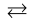

9.7 Stability of Coordination Compounds
The stability of a complex in solution refers to the degree of association between the two species involved in the state of equilibrium. The magnitude of the (stability or formation) equilibrium constant for the association, quantitatively expresses the stability. Thus, if we have a reaction of the type:
M + 4L  ML4
then the larger the stability constant, the higher the proportion of ML4 that exists in solution. Free metal ions rarely exist in the solution so that M will usually be surrounded by solvent molecules which will compete with the ligand molecules, L, and be successively replaced by them. For simplicity, we generally ignore these solvent molecules and write four stability constants as follows:
M + L ML K1 = [ML]/[M][L]
ML + L ML2 K2 = [ML2]/[ML][L]
ML2 + L ML3 K3 = [ML3]/[ML2][L]
ML3 + L ML4 K4 = [ML4]/[ML3][L]
where K1, K2, etc., are referred to as stepwise stability constants. Alternatively, we can write the overall stability constant thus:
M + 4L ML4 β4 = [ML4]/[M][L]4
The stepwise and overall stability constant are therefore related as follows:
β4 = K1 × K2 × K3 × K4 or more generally,
βn = K1 × K2 × K3 × K4 ....... Kn
If we take as an example, the steps involved in the formation of the cuprammonium ion, we have the following:
Cu2+ + NH3 Cu(NH3)2+ K1 = [Cu(NH3)2+]/[Cu2+][NH3]
Cu(NH3)2+ + NH3 Cu(NH3)22+ K2 = [Cu(NH3)22+]/[ Cu(NH3)2+][NH3] etc.
where K1, K2 are the stepwise stability constants and overall stability constant.
Also β4 = [Cu(NH3)42+]/[Cu2+][NH3)4
The addition of the four amine groups to copper shows a pattern found for most formation constants, in that the successive stability constants decrease. In this case, the four constants are:
logK1 = 4.0, logK2 = 3.2, logK3 = 2.7, logK4 = 2.0 or log β4 = 11.9
The instability constant or the dissociation constant of coordination compounds is defined as the reciprocal of the formation constant.